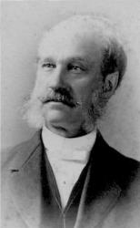

1095 Sound the Battle Cry 精兵興起 _W.
F. Sherwin Fountainview Academy -
|
|
生命聖詩 - 375 精兵興起
(Sound the Battle Cry!) |
|
1 Sound the battle cry!
See, the foe is nigh;
Raise the standard high
For the Lord;
Gird your armor on,
Stand firm, every one;
Rest your cause upon
His holy Word. Refrain:
Rouse, then, soldiers, rally round the banner,
Ready, steady, pass the word along;
Onward, forward, shout aloud, Hosanna!
Christ is Captain of the mighty throng.
2 Strong to meet the foe,
Marching on we go,
While our cause we know,
Must prevail;
Shield and banner bright,
Gleaming in the light;
Battling for the right
We ne’er can fail. (Refrain)
3 O Thou God of all,
Hear us when we call,
Help us one and all
By Thy grace;
When the battle’s done,
And the victory’s won,
May we wear the crown
Before Thy face. (Refrain)
Source: Worship
and Service Hymnal: For Church, School, and Home #420
|
仇敵已接近，戰號快吹起，
高舉主基督得勝旗；
披全副軍裝剛強立敵前，
得勝凱旋全靠主勝言。
大家向前進，奮勇戰仇敵，
深信跟隨主必勝利；
盾牌與旌旗在光中耀閃，
為主真理而戰必凱旋。
萬軍全能神，請聽我呼求，
助我們得勝施恩佑；
戰爭完畢後齊高歌凱旋，
頭戴榮耀冠冕站主前。
副歌：
精兵，興起！集合主旌旗下，
預備前進，將此令傳揚！
向前！向前！和散那高聲唱，
基督為此雄師大主將。
|
|

https://hymnary.org/hymn/WASH1957/page/352 |
|
|
|
Sound the Battle Cry! Acapeldridge
https://www.youtube.com/watch?v=b5p2LOGYJu0
生命聖詩375 | 精兵興起 | Sound the Battle Cry!
https://www.youtube.com/watch?v=cd6ivrDVt7Q
|
Short Name: |
William F. Sherwin |
|
Full Name: |
Sherwin, William F. (William Fisk), 1826-1888 |
|
Birth Year: |
1826 |
|
Death Year: |
1888 |
Sherwin, William
Fisk,
|
Short
Name: |
William F.
Sherwin |
|
Full Name: |
Sherwin, William
F. (William Fisk), 1826-1888 |
|
Birth
Year: |
1826 |
|
Death
Year: |
1888 |
Sherwin,
William Fisk, an American Baptist, was born at Buckland,
Massachusetts, March 14,1826. His educational opportunities, so far as
schools were concerned, were few, but he made excellent use of his time
and surroundings. At fifteen he went to Boston and studied music under
Dr. Mason: In due course he became a teacher of vocal music, and held
several important appointments in Massachusetts; in Hudson and Albany,
New York County, and then in New York City. Taking special interest in
Sunday Schools, he composed carols and hymn-tunes largely for their use,
and was associated with the Rev. R. Lowry and others in preparing Bright
Jewels, and other popular Sunday School hymn and tune books. A few
of his melodies are known in Great Britain through I. D. Sankey's Sacred
Songs and Solos, where they are given with his signature. His
hymnwriting was limited. The following pieces are in common use:—

精兵興起 Sound
the Battle Cry!
仇敵已接近，戰號快吹起，高舉主基督得勝旗；
披全副軍裝剛強立敵前，得勝凱旋全靠主聖言。
大家向前進，奮勇戰仇敵，深信跟隨主必勝利；
盾牌與旌旗在光中耀閃，為主真理而戰必凱旋。
萬軍全能神，請聽我呼求，助我們得勝施恩佑；
戰爭完畢後齊高歌凱旋，頭戴榮耀冠冕站主前。
（副歌）
精兵，興起！集合主旌旗下，
預備前進，將此令傳開！
向前！向前！高聲唱和散那，
基督為此雄師大元帥。
兵不經戰，難成精兵；基督徒不經歷患難，靈命難以成長。 願我們都是我主基督旌旗下的精兵，同唱凱歌榮主名。
這首詩的詞曲作者都是蕭文（William F. Sherwin, 1826-1888,見六月十九日）。他出生在美國麻省，自波士頓音樂院畢業後，曾在新英格蘭音樂學校教授聲學，並為奧勃尼女子神學院的音樂教授。
他的專長是能將業餘的音樂愛好者，訓練成卓越的合唱團，因此被聘為巧得魁合唱團的指揮。 團員們謔稱他為「親愛的暴君」。
「巧得魁」（Chautauqua）是印第安語，意思是多霧和捕魚之處。 它是美國紐約州內一個只有300居民的小村，座落在群山之間，大湖之濱。
衛理公會的范森會督（Bishop John H.
Vincent）在湖邊綿延的山坡上設立了一個聚會的營地，從每年十週的聖經課程及主日學的講習班，發展成全國各學術性活動的營地。
當代優秀的學者，藝術家，音樂家，戲劇家都前往參與。 十九世紀時，全美各地區都推展「巧得魁」運動，即舉辦一連串的演講及音樂會等。
蕭文和賴百麗（Mary A. Lathbury）合作的「黃昏敬拜」（Day Is
Dying in the West）是巧得魁每星期天晚必唱之歌。 著名的聖詩學家賀德（W. Garrett
Horder）曾稱該詩是近代最優美、最傑出的聖詩之一，堪與「慈光歌」（Lead, Kindly
Light）媲美。 它使歌者藉著歌聲表達心靈最深處的感覺和渴望。 其歌詞如下：
晚霞漸逝日西沉，暮色遍地夜來臨，俯伏跪拜主座前，
仰見星光滿高天，燦爛無邊。
生命之主在高天，創造宇宙居其間，我們聚集尋主面，
在主國中蒙恩眷，主顯聖顏。
夜幕低垂黑影深，大地蒙主愛覆蔭，願能衝過眾星辰，
得見祢面近祢身，獻上寸心。
白畫黑夜眾星宿，將來都必要過去，萬有主宰再顯現，
主遠晨光常照耀，黑暗全消。
（副歌）
聖哉，聖哉，聖哉，萬軍之神！
充滿天地宇宙間，萬物萬靈同頌讚至高之神！
 (請點耳機收聽)
(請點耳機收聽)
中英文聖詩集參考
英文歌名 Sound
the Battle Cry!
生命聖詩 375
聖詩 494
http://www.hymncompanions.org/Nov/23/stream.php
"SOUND THE BATTLE CRY"
"…Be strong….Put on the whole armor of God, that ye may…stand" (Eph.
6.10-11)
INTRO.:
A song which encourages us to be strong, put on the whole armor of God, and
stand in the fight of faith is "Sound the Battle Cry" (#225 in Sacred
Selections for the Church). The text was written and the tune (Battle Song)
was composed both by William Fiske Sherwin (1826-1888). Born in Buckland, MA, he
moved to Boston as a teenager and studied music with Lowell Mason. Later he
worked at the New England Conservatory of Music and taught singing in
Massachusetts and New York. The first music director at the Chautauqua Festival
near Chautauqua, NY, he was also a musical editor at Biglow and Main Publishers
of New York City.
Sherwin produced some tunes for poems by Fanny Crosby, but these have not become
very well known. His most famous tunes are found with Mary Ann Lathbury’s hymns
"Break Thou the Bread of Life" and "Day Is Dying in the West." One of our books
also used a tune of his with Hugh Stowell’s "Lord, of All Power and Might," and
several have included William O. Cushing’s "Beautiful Valley of Eden" with
another of his tunes. Sherwin is credited with a few songs in which he provided
both words and music, but "Sound the Battle Cry" is the only one of these found
in any of our books. It was first published in Biglow and Main’s 1869 Bright
Jewels.
Among hymnbooks published by members of the Lord’s church during the twentieth
century for use in churches of Christ, one of the earliest of our books in which
I have found it is the 1917 Selected
Revival Songs published by F. L. Rowe of Cincinnati, OH.
Today, it may be found in the 1971 Songs
of the Church, the 1990 Songs
of the Church 21st C. Ed., and the 1994 Songs
of Faith and Praise all edited by Alton H. Howard; the 1983 Church
Gospel Songs and Hymns edited by V. E. Howard (not in the
original 1978 edition); and the 1992 Praise
for the Lord edited by John P. Wiegand; in addition to Sacred
Selections and the new 2007 Sacred
Songs of the Church edited by William D. Jeffcoat.
The song reminds us of the great spiritual warfare in which we as Christians
must fight.
I. Stanza 1 emphasizes the armor that we need in the fight
"Sound the battle cry! See, the foe is nigh; Raise the standard high For the
Lord;
Gird your armor on, Stand firm, everyone, Rest your cause upon His holy Word."
A. We must sound the battle cry because we are to wage a good warfare: 1 Tim.
1.18
B. To do so, we must put on the armor of God to protect us in the fight: 1 Thes.
5.8
C. Both our armor and our cause must rest upon God’s word because it is sharper
than any two-edged sword: Heb. 4.12
II. Stanza 2 emphasizes the foe that we meet in the fight
"Strong to meet the foe, Marching on we go, While our cause we know Must
prevail;
Shield and banner bright Gleaming in the light; Battling for the right We ne’er
can fail."
A. Our adversary is the devil and all those who are serving him: 1 Pet. 5.8
B. In order to meet this foe, we must be strong: 1 Cor. 16.13
C. And to prevail against him, we must fight the good fight of the faith: 1
Tim. 6.12
III. Stanza 3 emphasizes our leader who guides us in the fight
"O! Thou, God of all, Hear us when we call, Help us, one and all, By Thy grace;
When the battle’s done, And the victory won, May we wear the crown Before Thy
face."
A. Our leader is our God who hears us, helps us, and saves us by His grace:
Eph. 2.8-9
B. Only with His help and by His grace can we win the victory that comes by
faith: 1 Jn. 5.4
C. And when the victory is won, He Himself will give us the crown to wear
before Him: Rev. 2.10
CONCL.:
The chorus is a spirited call to join in the battle and fight for the right:
"Rouse then, soldiers! Rally round the banner! Ready, steady, pass the word
along;
Onward, forward, shout aloud, Hosanna! Christ is Captain of the mighty throng."
Yes, the devil is our enemy; immorality, worldliness, and error are his weapons.
However, Christ is our victorious Captain, and so to join with Him who will lead
us to glory, we must "Sound the Battle Cry."
https://hymnstudiesblog.wordpress.com/2008/10/28/quotsound-the-battle-cryquot/
Words: William Fisk Sherman (b. Mar. 14, 1826; d. Apr.
14, 1888)
Music: William Fisk Sherman
Links:
Wordwise Hymns
The Cyber
Hymnal
Note: Words and music for this rousing gospel song were first
published in 1869. The dust had barely settled from the cavalry charges
of the American Civil War that ended in 1865. We catch the spirit of
that mortal conflict here, applied to our battle for the Lord.
Service for Christ is to be patient, gracious and loving
(I Thess. 5:14; I Tim. 5:11). But it also involves spiritual conflict
(Eph. 6:10-17; I Tim. 1:18; 6:12; II Tim. 2:1, 3-4). There is a great
deal of wisdom in this simply gospel song. Mr. Fisk identifies several
things in CH-1 and on that the church of Jesus Christ, and individual
Christians, should be doing:
1) “Sound the battle cry.” Let people know there is an enemy to face,
and a spiritual battle to be fought. We need to “rouse then,” (refrain)
both ourselves and others. Time to wake up and be on the alert.
2) “See the foe is nigh.” Satan is ever on the prowl. “Your adversary
the devil walks about like a roaring lion, seeking whom he may devour”
(I Pet. 5:8).
3) “Raise the standard high for the Lord.” In ancient warfare an
army’s “standard” or banner became a rallying point, a encouragement to
others to keep fighting and maintain their stand. There’s an echo of
George Root’s Civil War song here:
Yes we’ll rally round the flag, boys,
Rally once again,
Shouting the battle cry of freedom.
“When the enemy comes in like a flood, The Spirit of the LORD will
lift up a standard against him” (Isa. 59:19). So, as Fisk’s refrain puts
it, let us “rally round the banner” of the cross of Christ.
4) “Gird your armour on.” The Word of God goes into some detail
regarding the Christian’s armour (Eph. 6:10-17; cf. Heb. 4:12). If you
want a detailed explanation of each piece of equipment, see my article Christian
Armour.
5) “Stand firm everyone.” It’s the bottom line, in Christian
conflict–“and having done all, to stand [remain steadfast in the faith]”
(Eph. 6:13). “Watch, stand fast in the faith, be brave, be strong” (I
Cor. 16:13). William Fisk explains what this entails in his next line.
6) “Rest your cause upon His holy Word.” He’s speaking of the rest of
faith, that trusts fully in the promises of God.
7) In CH-2 the author encourages believers by reminding us that “our
cause, we know, must prevail,” and ultimately “we ne’er can fail. The
plan and purpose of a sovereign God will come to a successful
conclusion.
8) That being so, we look forward to our triumphant gathering before
the Lord Jesus Christ, and to the distribution of heavenly rewards.
CH-3) O! Thou God of all, hear us when we call,
Help us one and all by Thy grace;
When the battle’s done, and the vict’ry’s won,
May we wear the crown before Thy face.
Questions:
1) What are some key things that can help us to remain gracious, patient
and loving, on the one hand, and fiercely determined as fighters for the
Lord, on the other?
2) In your own community, what particular battle lines have been
drawn between God’s holy standard, as opposed to worldliness and sin?
Links:
Wordwise Hymns
The Cyber
Hymnal